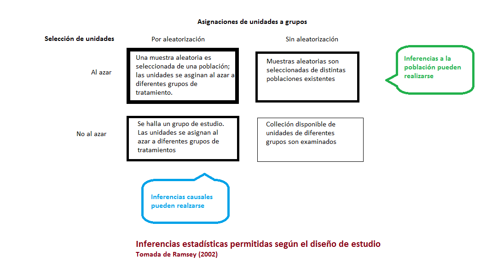

Capítulo 1 Introducción
Esta unidad tiene por objetivos:
- Entender los principios de los Diseños de Experimentos.
- Reconocer las guías o pautas necesarias de un diseño de experimentos.
1.1 ¿Qué es el método científico?
El método científico ha sido el pilar para investigar el mundo natural. Es a partir de esto que los científicos llegan correctamente a nuevos conocimientos y actualizan sus conocimientos previos.
De forma general se puede resumir los pasos del método científico como:
- Observar y realizar una pregunta
- Formular una hipótesis o explicación contrastable.
- Plantear una predición basada en la hipótesis
- Probar la predicciónn.
- Utilizar los resultados para realizar nuevas hipótesis o predicciones.
ACTIVIDAD
Piense en un fenómeno que desea investigar. Especifique cómo puede manipular el factor en estudio y mantener todos los demás factores o condiciones fijas para asegurarse de que estas no influyan en la respuesta que planea medir.
Luego decida como medir la variable respuesta elegida del factor en estudio. Si al cambiar los niveles del factor en estudio causa que el fenómeno cambie, entonces podría concluir que efectivamente existe una relación de causa y efecto en el trabajo.
1.2 ¿Estudio de diseño observacional o estudio de diseño experimental?

1.3 Breve historia de los diseño de experimentos
- Origen en la agricultura (1918-1940). ANOVA
- Primera era industrial (1951 – finales 1970). Box & Wilson. Superficies de respuestas. Aplicaciones en procesos químicos e industriales
- Segunda era industrial (finales de 1970s – 1990). Iniciativas de mejoramiento de la calidad en algunas compañías. Diseño de Taguchi y de parámetros robustos.
- Era moderna. Se caracteriza por emplear técnicas estadísticas para tomar decisiones basadas en la calidad. Desarrollo de ensayos clínicos.
1.4 Principios básicos de los diseños experimentales
- Aleatorización. Componente escencial de cualquier experimento para tener validez.
- Replicación. Es fundamental detrás de cada método estadístico para saber cuán precisas son las estimaciones finales.
- Control local. Procedimiento para incluir otros factores en un experimento que contribuyen a una variación no desaeble. La idea es usar creativamente varias técnicas como bloqueo, balanceo, etc para controlar las fuentes de variación que reducirán la varianza del error.
1.5 Pasos para planear, conducir y analizar un experimento
Los pasos prácticos necesarios para planificar y realizar un experimento incluyen: reconocer el objetivo del experimento, elegir los factores, respuesta(s), diseño, análisis, para luego elaborar conclusiones.
- Reconocimiento y planteamiento del problema.
- Elección de factores, niveles y rangos.
- Selección de la(s) variable(s) respuesta(s).
- Elección de diseño.
- Conducir el experimento.
- Análisis estadístico.
- Elaborar conclusiones y recomendaciones.
1.6 Elementos básicos
1.6.1 Unidad experimental
Son elementos o cosas a los cuales se aplica los tratamiento. Pueden ser personas, ratones, muestras de un material, etc.
1.6.2 Error experimental
Cuantifica la variación existente entre las observaciones tratadas con iguales tratamientos.
1.6.3 Factor
Variable explicativa o predictora que afecta los resultados del experimento. Pueden clasificarse de distintos puntos de vista:
- Según sean de interés (factores primarios) o no (ruido).
- Según puedan ser especificado y asignados aleatoriamente: factores experimentales y factores de clasificación.
- Factores cualitativos o cuantitativos.
Los tratamientos son los niveles de un factor o la combinación de niveles de los factores de interés.
" To call in the statistician after the experiment is done may be no more than asking him to perform a post-mortem examination: he may be able to say what the experiment died of. " (R. Fisher) .